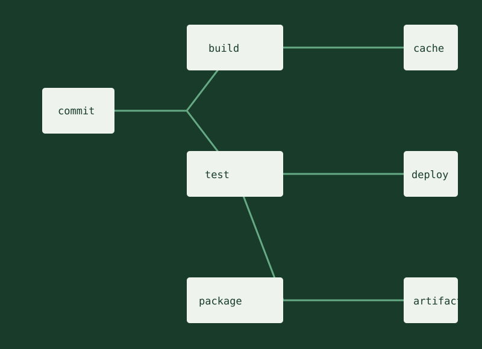

Open source · Flagship project
Coyote CI
An open-source CI/CD platform built from scratch for teams that want a capable, understandable delivery system.
- Go backend with distributed workers and parallel build execution
- Pipeline-as-code, artifact management, and remote caching
- GitHub integration, RBAC, Slack notifications, and a CLI
- Designed for GCP deployment
